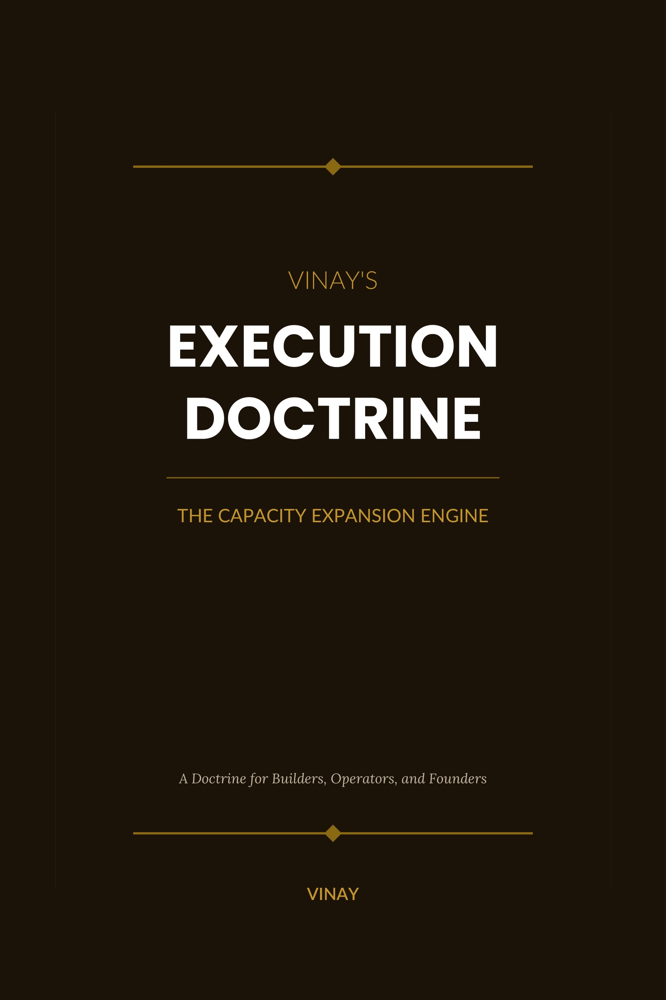

Vinay's Execution Doctrine
The Capacity Expansion Engine — a doctrine for builders, operators, and founders.

The Spirit of the Doctrine
Execution is among the most consequential force multipliers in professional and personal life. It is the bridge between intention and reality, between strategic vision and tangible result, between possibility and built form.
Execution is not merely a function of effort. It is not reducible to discipline, intensity, speed, sincerity, or the willingness to work harder than the next person. The highest form of execution is mastery.
Every process, every team, every system, and every mission has a current limiting factor. A master executor learns to strengthen that point repeatedly until the capacity of the whole begins to rise.
The Capacity Expansion Engine
The Capacity Expansion Engine is the repeating cycle through which systems become progressively stronger. It is built on top of the standard Plan-Do-Check-Act cycle, refined with a specific discipline: in each cycle, the current governing constraint is identified and strengthened.
With each cycle, the system becomes stronger. Not through general effort or broad improvement, but through targeted strengthening of specific constraints. Friction has been reduced. Bottlenecks have been opened. The system has expanded its capacity.
It is called an ‘engine’ because, once established, it becomes self-perpetuating.
The Discipline of One Constraint
One of the hardest disciplines in execution is the discipline of focusing on one constraint. The natural instinct to ‘improve everything’ creates pressure to address multiple problems at once. The doctrine resists this temptation.
Effort that is diffused across multiple problems produces diffuse results. Effort concentrated on one specific problem produces visible improvement. If the identified constraint is truly governing, then improving it produces visible improvement in output.
Only one constraint can govern the current cycle of strengthening. Identify it clearly. Strengthen it specifically. Then move to the next.
Vinay's Execution Doctrine
The Capacity Expansion Engine. A universal system for converting clear understanding into reliable action and systematically expanding the capacity of systems to produce output. Built on the PDCA cycle and refined with the discipline of constraint identification — cycle after cycle.
What You'll Learn
A formal, structured method for converting understanding into reliable action — and building systems that become progressively more capable over repeated cycles.
The Governing Limit
Every system has a current limiting factor. Learn to see past the loudest problem to the structural point that actually governs output — and why misidentifying it wastes every hour spent fixing the wrong thing.
The Capacity Expansion Engine
PDCA refined with constraint discipline. Plan, Do, Check, Act — with the Check stage focused on identifying the live bottleneck and the Act stage focused on strengthening it specifically for the next cycle.
The Discipline of One Constraint
Improvement effort spread thin produces nothing. Improvement concentrated on the actual governing constraint produces visible capacity gains. Master the discipline of focus, cycle after cycle.
Who This Book Is For
For builders, operators, founders, and leaders who intend to execute seriously over long periods of time. For those who understand that real progress does not come from noise, motion, or management theatre, but from the disciplined strengthening of the path through which outcomes are produced.
If SIV is for seeing clearly, this doctrine is for building effectively. One governs the quality of understanding. The other governs the quality of execution.
Every system has a current limiting factor. That is not a constraint. That is an opportunity.— Vinay's Execution Doctrine
Vinay Pasricha
A founder, builder, and systems thinker whose work sits at the intersection of technology, judgement, and execution. Vinay's Execution Doctrine emerged from decades of operating real systems — and from the conviction that mastery is built one strengthened constraint at a time. This is his third book.
More Writing
Explore essays, reflections, and ideas on entrepreneurship, education, AI, and the future of work.